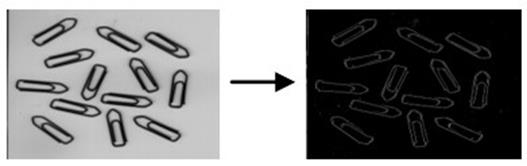

|
类型 |
分割 | ||||||||||
|
描述 |
对输入图像执行自适应阈值化，生成二值图像。 自适应阈值效果类似于对图像进行高通滤波--提取目标的轮廓。 目标轮廓的尺寸取决于滤波器的大小以及目标轮廓本身的梯度幅度。滤波器尺寸越大找到的目标区域则越大，经验上滤波器尺寸通常为被提取的目标轮廓的2倍。 偏移范围参数offset也非常重要，offset最好不要设置为0，这会导致许多小区域被找到（通常为噪声），5-40这样的值比较常用，offset越大提取的区域越小 | ||||||||||
|
语法 |
ZV_ImpDynThresh(src,dst,filterType,filterSize,offset,type)
参数： src：ZVOBJECT类型，源图像，单通道图像 dst：ZVOBJECT类型，二值图像 filterType：使用的滤波算法：0-高斯滤波，1-均值波 filterSize：使用的滤波器大小，范围[1,201] offset：选取结果的容许偏移范围，范围(-255, 255) type：结果选取类型，范围0-3，图像中满足type选取类型的点将被作为提取的目标区域
| ||||||||||
|
适用控制器 |
支持ZV功能或者5系列以上的控制器 | ||||||||||
|
例子 |
 ZVOBJECT src,dst ZV_ImgRead(src,"thresh.png",0) '以原图像格式读取图片 ZV_ImpDynThresh(src,dst,0,5,10,0) '选取图像与自身5x5高斯滤波图像差值在-10到10之间的点，即较平滑的区域 |